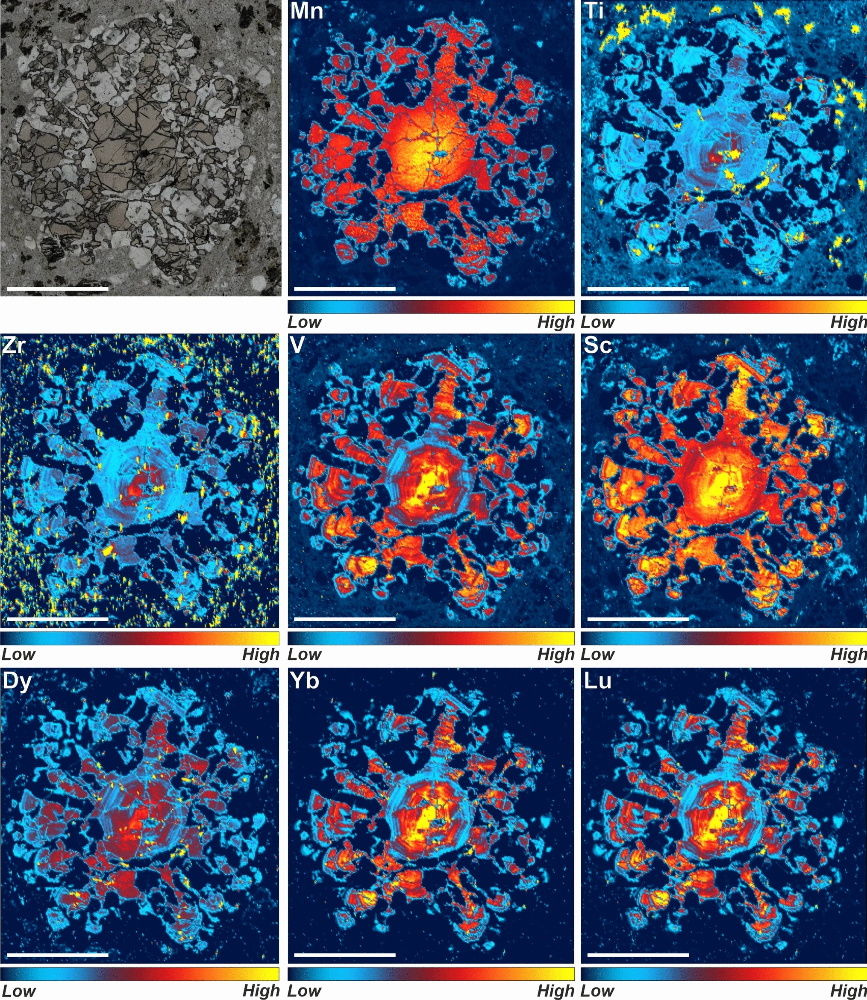

From source to surface: clues from garnet-bearing Carboniferous silicic volcanic rocks, Iberian Pyrite Belt, Portugal

Resumo em Português
Este trabalho investiga as relações entre fusão parcial, extração de fundido, crescimento de plutons e vulcanismo silícico em rochas vulcânicas félsicas portadoras de granada extrudidas no Cinturão Piritoso Ibérico, em ~345 Ma. As granadas são de origem peritética, exibindo feições texturais e químicas de cristalização em desequilíbrio durante reações de fusão parcial envolvendo biotita em altas temperaturas (até 870 °C) na crosta média-inferior. A composição em elementos maiores sugere equilíbrio composicional com a cordierita peritética arrastada e pinitizada, mas revela alguma homogeneização subsequente por difusão. Mapeamentos de elementos traço e análises pontuais da granada evidenciam variações significativas em elementos traço, refletindo a decomposição de biotita e fases acessórias ricas em Y-ETR-P durante as reações de fusão parcial. O crescimento de granada e cordierita peritéticas resultou na preservação de monazita suprasolidus progressiva rica em Th e Y, que delimita o momento da fusão parcial do protólito metapelítico em ~356,8 ± 2,4 Ma. O conjunto de zircões evidencia ainda que uma quantidade significativa de cristais de zircão provenientes de fundidos félsicos previamente cristalizados também foi remobilizada e eruptada. Esses cristais foram provavelmente armazenados em um pluton crustal raso que cresceu episodicamente desde ~390 Ma durante períodos de geração volumosa de fundido na crosta média a inferior, resultando também em vulcanismo volumoso. As tendências geoquímicas das rochas vulcânicas félsicas refletem o arrastamento de xenólitos de granada, cordierita e feldspato peritéticos, de modo que as rochas vulcânicas félsicas portadoras de granada representam uma mistura eruptada de um fundido silícico de menor temperatura (~770 °C) com autocristos e fases peritéticas e cristais de zircão de fundidos félsicos previamente cristalizados e armazenados.